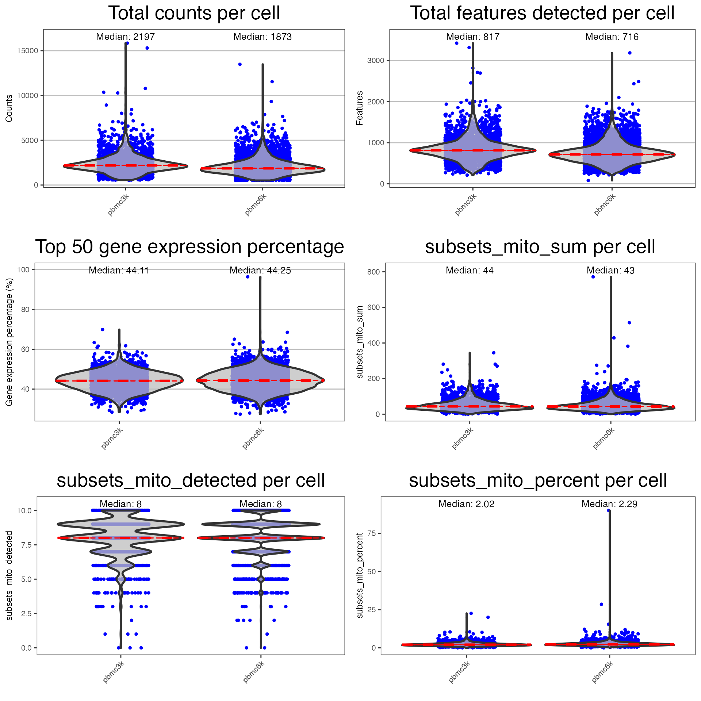
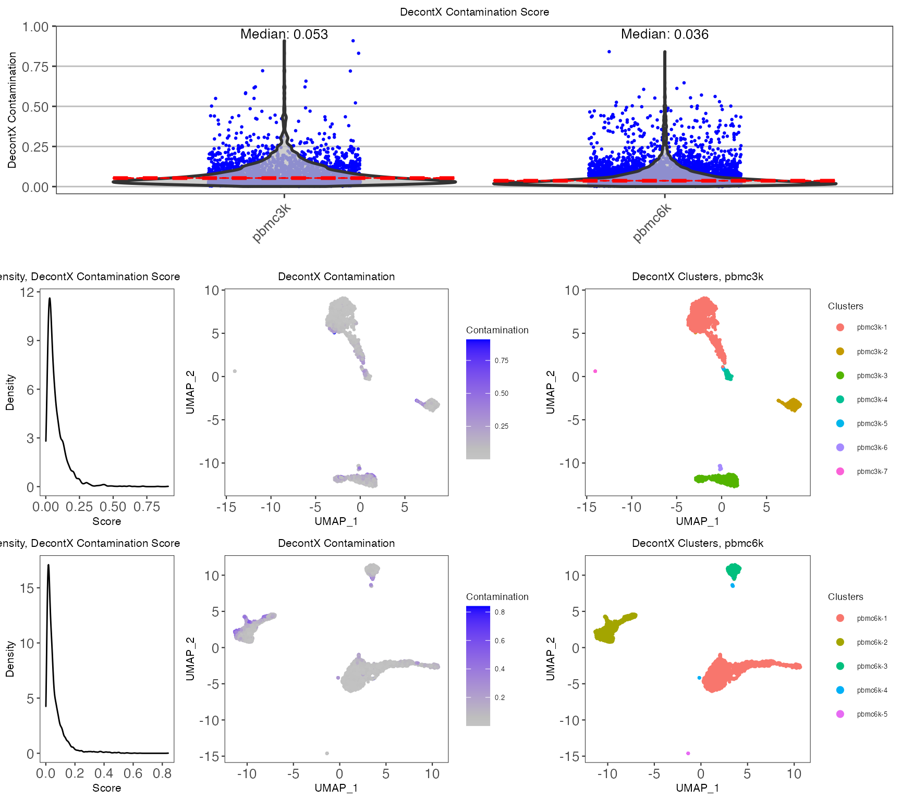

Introduction
Performing comprehensive quality control (QC) is necessary to remove poor quality cells for downstream analysis of single-cell RNA sequencing (scRNA-seq) data. Within droplet-based scRNA-seq data, droplets containing cells must be differentiated from empty droplets. Therefore, assessment of the data is required, for which various QC algorithms have been developed. In singleCellTK, we have written convenience functions for several of these tools. In this guide, we will demonstrate how to use these functions to perform quality control on unfiltered, droplet-level data.
The package can be loaded using the library command.
Running quality control of cell-filtered single cell data with singleCellTK
Load PBMC data from 10X
We will use a filtered form of the PBMC 3K and 6K dataset from the package TENxPBMCData, which is available from the importExampleData function. We will combine these datasets together into a single SingleCellExperiment object.
pbmc3k <- importExampleData(dataset = "pbmc3k")
pbmc6k <- importExampleData(dataset = "pbmc6k")
pbmc.combined <- BiocGenerics::cbind(pbmc3k, pbmc6k)
sample.vector = colData(pbmc.combined)$samplesingleCellTK also supports the importing of single-cell data from the following platforms: 10X CellRanger, STARSolo, BUSTools, SEQC, DropEST, and AnnData. To load your own input data, please refer Import data into SCTK for deailed instruction.
Run Dimensionality Reduction
SCTK utilizes dimensionality reduction techniques such as TSNE and UMAP for visualizing single-cell data. The user can modify the dimensions by adjusting the parameters within the function. The logNorm parameter should be set to TRUE for normalization prior to running dimensionality reduction.
The sample parameter may be specified if multiple samples exist in the SingleCellExperiment object. Here, we will use the sample vector stored in the colData of the SingleCellExperiment object.
# UMAP:
pbmc.combined <- getUMAP(inSCE = pbmc.combined, useAssay = "counts", logNorm = TRUE, sample = sample.vector)
# TSNE (not run):
# pbmc <- getTSNE(inSCE=pbmc, useAssay="counts", logNorm = TRUE, sample = colData(pbmc)$sample)runCellQC
All of the droplet-based QC algorithms are able to be run under the wrapper function runCellQC. By default all possible QC algorithms will be run.
Users may set a sample parameter if you would like to compare between multiple samples. Here, we will use the sample vector stored in the SingleCellExperiment object.
If the user wishes, a list of gene sets can be applied to the function to determine the expression of a set of specific genes. A gene list imported into the SingleCellExperiment object using importGeneSets functions can be set as collectionName. Additionally, a pre-made list of genes can be used to determine the level of gene expression per cell. A list containing gene symbols may be set as geneSetList, or the user may instead use the geneSetCollection parameter to supply a GeneSetCollection object from the GSEABase package.
pbmc.combined <- importGeneSetsFromGMT(inSCE = pbmc.combined, collectionName = "mito", file = system.file("extdata/mito_subset.gmt", package = "singleCellTK"))
set.seed(12345)
pbmc.combined <- runCellQC(pbmc.combined, sample = sample.vector, collectionName = "mito")
If users choose to only run a specific set of algorithms, they can specify which to run with the algorithms parameter.
When quality control functions are run in singleCellTK, the output of the function is stored in the colData slot of the SingleCellExperiment object.
head(colData(pbmc.combined), 5)| Sample | Barcode | Sequence | Library | Cell_ranger_version | Tissue_status | Barcode_type | Chemistry | Sequence_platform | Individual | Date_published | sample | sum | detected | percent.top_50 | percent.top_100 | percent.top_200 | percent.top_500 | subsets_mito_sum | subsets_mito_detected | subsets_mito_percent | total | scrublet_score | scrublet_call | scDblFinder_sample | scDblFinder_cluster | scDblFinder_class | scDblFinder_doublet_score | scDblFinder_ratio | scDblFinder_weighted | scDblFinder_nearestClass | scDblFinder_difficulty | scDblFinder_cxds_score | scDblFinder_mostLikelyOrigin | scDblFinder_originAmbiguous | doubletFinder_doublet_score_resolution_1.5 | doubletFinder_doublet_label_resolution_1.5 | scds_cxds_score | scds_cxds_call | scds_bcds_score | scds_bcds_call | scds_hybrid_score | scds_hybrid_call | decontX_contamination | decontX_clusters | |
|---|---|---|---|---|---|---|---|---|---|---|---|---|---|---|---|---|---|---|---|---|---|---|---|---|---|---|---|---|---|---|---|---|---|---|---|---|---|---|---|---|---|---|---|---|---|
| pbmc3k_AAACATACAACCAC-1 | pbmc3k | AAACATACAACCAC-1 | AAACATACAACCAC | 1 | v1.1.0 | NA | GemCode | Chromium_v1 | NextSeq500 | HealthyDonor2 | 2016-05-26 | pbmc3k | 2421 | 781 | 47.74886 | 63.27964 | 74.96902 | 88.39323 | 73 | 10 | 3.015283 | 2421 | 0.2394366 | FALSE | pbmc3k | 1 | singlet | 0.5120444 | 0.86 | 0.8746153 | artificialDoublet | 0.1069034 | 0.0248409 | 1+2 | FALSE | 0.0138889 | Singlet | 22794.14 | FALSE | 0.0023788 | FALSE | 0.208113 | FALSE | 0.0331599 | pbmc3k-1 |
| pbmc3k_AAACATTGAGCTAC-1 | pbmc3k | AAACATTGAGCTAC-1 | AAACATTGAGCTAC | 1 | v1.1.0 | NA | GemCode | Chromium_v1 | NextSeq500 | HealthyDonor2 | 2016-05-26 | pbmc3k | 4903 | 1352 | 45.50275 | 61.02386 | 71.81318 | 82.62288 | 186 | 10 | 3.793596 | 4903 | 0.0935252 | FALSE | pbmc3k | 4 | singlet | 0.0793516 | 0.52 | 0.5519875 | artificialDoublet | 0.0338731 | 0.1137545 | 1+4 | FALSE | 0.1527778 | Singlet | 35689.05 | FALSE | 0.8127224 | TRUE | 1.110518 | TRUE | 0.1390662 | pbmc3k-2 |
A summary of all outputs is shown below:
| QC output | Description | Methods | Package/Tool |
|---|---|---|---|
| sum | Total counts | runPerCellQC | scater |
| detected | Total features | runPerCellQC | scater |
| percent_top | % Expression coming from top features | runPerCellQC | scater |
| subsets_ | sum, detected, percent_top calculated on specified gene list | runPerCellQC | scater |
| scrublet_score | Doublet score | runScrublet | scrublet |
| scrublet_call | Doublet classification based on threshold | runScrublet | scrublet |
| scDblFinder_doublet_score | Doublet score | runScDblFinder | scran |
| doubletFinder_doublet_score | Doublet score | runDoubletFinder | DoubletFinder |
| doubletFinder_doublet_label_resolution | Doublet classification based on threshold | runDoubletFinder | DoubletFinder |
| scds_cxds_score | Doublet score | runCxds | SCDS |
| scds_cxds_call | Doublet classification based on threshold | runCxds | SCDS |
| scds_bcds_score | Doublet score | runBcds | SCDS |
| scds_bcds_call | Doublet classification based on threshold | runBcds | SCDS |
| scds_hybrid_score | Doublet score | runCxdsBcdsHybrid | SCDS |
| scds_hybrid_call | Doublet classification based on threshold | runCxdsBcdsHybrid | SCDS |
| decontX_contamination | Ambient RNA contamination | runDecontX | celda |
| decontX_clusters | Clusters determined in dataset based on underlying algorithm | runDecontX | celda |
The names of the reducedDims of the SingleCellExperiment object are stored in the reducedDims slot.
reducedDims(pbmc.combined)## List of length 6
## names(6): UMAP scrublet_TSNE ... decontX_pbmc3k_UMAP decontX_pbmc6k_UMAPGenerating a summary statistic table
The function sampleSummaryStats may be used to generate a table containing the mean and median of the data per sample.
sampleSummaryStats(pbmc.combined, sample = sample.vector)## pbmc3k pbmc6k Total
## Number of Cells 2700.00 5419.00 8119.00
## Mean counts 2366.90 2027.60 2140.50
## Median counts 2197.00 1873.00 1988.00
## Mean features detected 846.99 748.06 780.96
## Median features detected 817.00 716.00 750.00If users choose to generate a table for all QC metrics generated through runCellQC, they may set the simple parameter to FALSE.
sampleSummaryStats(pbmc.combined, sample = sample.vector, simple = FALSE)## pbmc3k pbmc6k
## Number of Cells 2700.0000 5419.0000
## Mean counts 2366.9000 2027.6000
## Median counts 2197.0000 1873.0000
## Mean features detected 846.9900 748.0600
## Median features detected 817.0000 716.0000
## Scrublet - Number of doublets 44.0000 132.0000
## Scrublet - Percentage of doublets 1.6300 2.4400
## scDblFinder - Number of doublets 55.0000 255.0000
## scDblFinder - Percentage of doublets 2.0400 4.7100
## DoubletFinder - Number of doublets, Resolution 1.5 202.0000 406.0000
## DoubletFinder - Percentage of doublets, Resolution 1.5 7.4800 7.4900
## CXDS - Number of doublets 132.0000 294.0000
## CXDS - Percentage of doublets 4.8900 5.4300
## BCDS - Number of doublets 160.0000 278.0000
## BCDS - Percentage of doublets 5.9300 5.1300
## SCDS Hybrid - Number of doublets 180.0000 309.0000
## SCDS Hybrid - Percentage of doublets 6.6700 5.7000
## DecontX - Mean contamination 0.0809 0.0605
## DecontX - Median contamination 0.0552 0.0365
## Total
## Number of Cells 8119.0000
## Mean counts 2140.5000
## Median counts 1988.0000
## Mean features detected 780.9600
## Median features detected 750.0000
## Scrublet - Number of doublets 176.0000
## Scrublet - Percentage of doublets 2.1700
## scDblFinder - Number of doublets 310.0000
## scDblFinder - Percentage of doublets 3.8200
## DoubletFinder - Number of doublets, Resolution 1.5 608.0000
## DoubletFinder - Percentage of doublets, Resolution 1.5 7.4900
## CXDS - Number of doublets 426.0000
## CXDS - Percentage of doublets 5.2500
## BCDS - Number of doublets 438.0000
## BCDS - Percentage of doublets 5.3900
## SCDS Hybrid - Number of doublets 489.0000
## SCDS Hybrid - Percentage of doublets 6.0200
## DecontX - Mean contamination 0.0673
## DecontX - Median contamination 0.0417Plotting QC metrics
Upon running runCellQC, the QC outputs will need to be plotted. For each QC method, singleCellTK contains specialized plotting functions that may be used for the generation of QC plots.
General QC metrics
runPerCellQC
SingleCellTK utilizes the scater package to compute cell-level QC metrics.
The wrapper function plotRunPerCellQCResults can be used to plot the general QC outputs.
runpercellqc.results <- plotRunPerCellQCResults(inSCE = pbmc.combined, sample = sample.vector, combinePlot = "all", axisSize = 8, axisLabelSize = 9, titleSize = 20, labelSamples=TRUE)
runpercellqc.results
Doublet detection
Doublets hinder cell-type identification by appearing as a distinct transcriptomic state, and need to be removed for downstream analysis. singleCellTK contains various doublet detection tools that the user may choose from.
Scrublet
Scrublet aims to detect doublets by creating simulated doublets from combining transcriptomic profiles of existing cells in the dataset.
The wrapper function plotScrubletResults can be used to plot the results from the Scrublet algorithm.
The names of the reducedDims of the SingleCellExperiment object are stored in the reducedDims slot. Here, we will use the UMAP coordinates generated from getUMAP above.
reducedDims(pbmc.combined)## List of length 6
## names(6): UMAP scrublet_TSNE ... decontX_pbmc3k_UMAP decontX_pbmc6k_UMAP
scrublet.results <- plotScrubletResults(
inSCE = pbmc.combined,
reducedDimName = "UMAP",
sample = colData(pbmc.combined)$sample,
combinePlot = "all",
titleSize = 10,
axisLabelSize = 8,
axisSize = 10,
legendSize = 10,
legendTitleSize = 10
)
scrublet.results 
ScDblFinder
ScDblFinder is a doublet detection algorithm. ScDblFinder aims to detect doublets by creating a simulated doublet from existing cells and projecting it to the same PCA space as the cells.
The wrapper function plotScDblFinderResults can be used to plot the QC outputs from the ScDblFinder algorithm.
scDblFinder.results <- plotScDblFinderResults(
inSCE = pbmc.combined, sample = colData(pbmc.combined)$sample,
reducedDimName = "UMAP", combinePlot = "all",
titleSize = 13,
axisLabelSize = 13,
axisSize = 13,
legendSize = 13,
legendTitleSize = 13
)DoubletFinder
DoubletFinder is a doublet detection algorithm which depends on the single cell analysis package Seurat.
The wrapper function plotDoubletFinderResults can be used to plot the QC outputs from the DoubletFinder algorithm.
doubletFinderResults <- plotDoubletFinderResults(
inSCE = pbmc.combined,
sample = colData(pbmc.combined)$sample,
reducedDimName = "UMAP",
combinePlot = "all",
titleSize = 13,
axisLabelSize = 13,
axisSize = 13,
legendSize = 13,
legendTitleSize = 13
)SCDS, CXDS
CXDS, or co-expression based doublet scoring, is an algorithm in the SCDS package which employs a binomial model for the co-expression of pairs of genes to determine doublets.
The wrapper function plotCxdsResults can be used to plot the QC outputs from the CXDS algorithm.
cxdsResults <- plotCxdsResults(
inSCE = pbmc.combined,
sample = colData(pbmc.combined)$sample,
reducedDimName = "UMAP", combinePlot = "all",
titleSize = 13,
axisLabelSize = 13,
axisSize = 13,
legendSize = 13,
legendTitleSize = 13
)SCDS, BCDS
BCDS, or binary classification based doublet scoring, is an algorithm in the SCDS package which uses a binary classification approach to determine doublets.
The wrapper function plotBCDSResults can be used to plot the QC outputs from the BCDS algorithm
bcdsResults <- plotBcdsResults(
inSCE = pbmc.combined,
sample = colData(pbmc.combined)$sample,
reducedDimName = "UMAP", combinePlot = "all",
titleSize = 13,
axisLabelSize = 13,
axisSize = 13,
legendSize = 13,
legendTitleSize = 13
)SCDS, CXDS-BCDS hybrid
The CXDS-BCDS hybrid algorithm, uses both CXDS and BCDS algorithms from the SCDS package.
The wrapper function plotScdsHybridResults can be used to plot the QC outputs from the CXDS-BCDS hybrid algorithm.
bcdsCxdsHybridResults <- plotScdsHybridResults(
inSCE = pbmc.combined, sample = colData(pbmc.combined)$sample,
reducedDimName = "UMAP", combinePlot = "all",
titleSize = 13,
axisLabelSize = 13,
axisSize = 13,
legendSize = 13,
legendTitleSize = 13
)Ambient RNA detection
DecontX
In droplet-based single cell technologies, ambient RNA that may have been released from apoptotic or damaged cells may get incorporated into another droplet, and can lead to contamination. decontX, available from the celda, is a Bayesian method for the identification of the contamination level at a cellular level.
The wrapper function plotDecontXResults can be used to plot the QC outputs from the DecontX algorithm.
decontxResults <- plotDecontXResults(
inSCE = pbmc.combined, sample = colData(pbmc.combined)$sample,
reducedDimName = "UMAP", combinePlot = "all",
titleSize = 8,
axisLabelSize = 8,
axisSize = 10,
legendSize = 5,
legendTitleSize = 7,
relWidths = c(0.5, 1, 1),
sampleRelWidths = c(0.5, 1, 1),
labelSamples = TRUE,
labelClusters = FALSE
)
decontxResults
Filtering the dataset
SingleCellExperiment objects can be subset by its colData using subsetSCECols. The colData parameter takes in an expression in character vector form which will be used to identify a subset of columns using variables found in the colData of the SingleCellExperiment object. For example, if x is a numeric vector in colData, then “x < 5” will return all columns with x less than 5. The index parameter takes in a vector of indices which should be kept, while bool takes in a vector of TRUE or FALSE which should be the same length as the number of columns in the SingleCellExperiment object.
#Before filtering:
dim(pbmc.combined)## [1] 32738 8119Remove barcodes with high mitochondrial gene expression:
pbmc.combined <- subsetSCECols(pbmc.combined, colData = 'subsets_mito_percent < 20')Remove detected doublets from Scrublet:
pbmc.combined <- subsetSCECols(pbmc.combined, colData = 'scrublet_call == FALSE')Remove cells with high levels of ambient RNA contamination:
pbmc.combined <- subsetSCECols(pbmc.combined, colData = 'decontX_contamination < 0.5')
#After filtering:
dim(pbmc.combined)## [1] 32738 7932Running individual QC methods
Instead of running all quality control methods on the dataset at once, users may elect to execute QC methods individually. The parameters as well as the outputs to individual QC functions are described in detail as follows:
runPerCellQC
The wrapper function runPerCellQC can be used to separately compute QC metrics on its own.
In this function, the inSCE parameter is the input SingleCellExperiment object, while the useAssay parameter is the assay object that in the SingleCellExperiment object the user wishes to use.
If the user wishes, a list of gene sets can be applied to the function to determine the expression of a set of specific genes. A gene list imported into the SingleCellExperiment object using importGeneSets functions can be set as collectionName. Additionally, a pre-made list of genes can be used to determine the level of gene expression per cell. A list containing gene symbols may be set as geneSetList, or the user may instead use the geneSetCollection parameter to supply a GeneSetCollection object from the GSEABase package.
The QC outputs are sum, detected, and percent_top_X.
sum contains the total number of counts for each cell.
detected contains the total number of features for each cell.
percent_top_X contains the percentage of the total counts that is made up by the expression of the top X genes for each cell.
The subsets_ columns contain information for the specific gene list that was used. For instance, if a gene list containing mitochondrial genes named mito was used, subsets_mito_sum would contains the total number of mitochondrial counts for each cell.
pbmc.combined <- runPerCellQC(
inSCE = pbmc.combined,
useAssay = "counts",
collectionName = "mito")runScrublet
The wrapper function runScrublet can be used to separately run the Scrublet algorithm on its own.
The sample parameter indicates what sample each cell originated from. It can be set to NULL if all cells in the dataset came from the same sample.
Scrublet also has a large set of parameters that the user can adjust; please refer to the Scrublet website for more details.
The Scrublet outputs are scrublet_score, which is a numeric variable of the likelihood that a cell is a doublet, and the scrublet_label, which is the assignment of whether the cell is a doublet.
pbmc.combined <- runScrublet(
inSCE = pbmc.combined,
sample = colData(pbmc.combined)$sample,
useAssay = "counts"
)runScDblFinder
The wrapper function runBarcodeRankDrops can be used to separately run the ScDblFinder algorithm on its own. The nNeighbors parameter is the number of nearest neighbor used to calculate the density for doublet detection. simDoublets is used to determine the number of simulated doublets used for doublet detection.
The output of ScDblFinder is a scDblFinder_doublet_score. The doublet score of a droplet will be higher if the it is deemed likely to be a doublet.
pbmc.combined <- runScDblFinder(inSCE = pbmc.combined, sample = colData(pbmc.combined)$sample, useAssay = "counts")runDoubletFinder
The wrapper function runDoubletFinder can be used to separately run the DoubletFinder algorithm on its own. runDoubletFinder relies on a parameter (in Seurat) called resolution to determine cells that may be doublets. Users will be able to manipulate the resolution parameter through seuratRes. If multiple numeric vectors are stored in seuratRes, there will be multiple label/scores. The seuratNfeatures parameter determines the number of features that is used in the FindVariableFeatures function in Seurat. seuratPcs parameter determines the number of dimensions used in the FindNeighbors function in Seurat. The formationRate parameter is the estimated doublet detection rate in the dataset. aims to detect doublets by creating simulated doublets from combining transcriptomic profiles of existing cells in the dataset.
The DoubletFinder outputs are doubletFinder_doublet_score, which is a numeric variable of the likelihood that a cell is a doublet, and the doubletFinder_doublet_label, which is the assignment of whether the cell is a doublet.
pbmc.combined <- runDoubletFinder(
inSCE = pbmc.combined, useAssay = "counts",
sample = colData(pbmc.combined)$sample,
seuratRes = c(1.0), seuratPcs = 1:15,
seuratNfeatures = 2000,
formationRate = 0.075, seed = 12345
)runCXDS
The wrapper function runCxds can be used to separately run the CXDS algorithm on its own. In runCxds, the ntop parameter is the number of top variance genes to consider. The binThresh parameter is the minimum counts a gene needs to have to be included in the analysis. verb determines whether progress messages will be displayed or not. retRes will determine whether the gene pair results should be returned or not. The user may set the estimated number of doublets with estNdbl.
The output of runCxds is the doublet score, scds_cxds_score.
pbmc.combined <- runCxds(
inSCE = pbmc.combined, sample = colData(pbmc.combined)$sample,
ntop = 500, binThresh = 0,
verb = FALSE, retRes = FALSE, estNdbl = FALSE
)runBCDS
The wrapper function runBcds can be used to separately run the BCDS algorithm on its own. In runBcds, the ntop parameter is the number of top variance genes to consider. The srat parameter is the ratio between original number of cells and simulated doublets. The nmax parameter is the maximum number of cycles that the algorithm should run through. If set to tune, this will be automatic. The varImp parameter determines if the variable importance should be returned or not.
The output of runBcds is scds_bcds_score, which is the likelihood that a cell is a doublet.
pbmc.combined <- runBcds(
inSCE = pbmc.combined, seed = 12345, sample = colData(pbmc.combined)$sample,
ntop = 500, srat = 1, nmax = "tune", varImp = FALSE
)runCxdsBcdsHybrid
The wrapper function runCxdsBcdsHybrid can be used to separately run the CXDS-BCDS hybrid algorithm on its own.
All parameters from the runBCDS and runBCDS functions may be applied to this function in the cxdsArgs and bcdsArgs parameters, respectively. The output of runCxdsBcdsHybrid is the doublet score, scds_hybrid_score.
pbmc.combined <- runCxdsBcdsHybrid(
inSCE = pbmc.combined, sample = colData(pbmc.combined)$sample,
seed = 12345, nTop = 500
)runDecontX
The outputs of runDecontX are decontX_contamination and decontX_clusters.
The wrapper function runDecontX can be used to separately run the DecontX algorithm on its own. decontX_contamination is a numeric vector which characterizes the level of contamination in each cell. Clustering is performed as part of the runDecontX algorithm. decontX_clusters is the resulting cluster assignment, which can also be labeled on the plot.
pbmc.combined <- runDecontX(pbmc.combined, sample = colData(pbmc.combined)$sample, useAssay = "counts")Session Information
## R version 4.0.2 (2020-06-22)
## Platform: x86_64-pc-linux-gnu (64-bit)
## Running under: CentOS Linux 7 (Core)
##
## Matrix products: default
## BLAS: /share/pkg.7/r/4.0.2/install/lib/libopenblasp-r0.3.7.so
## LAPACK: /share/pkg.7/r/4.0.2/install/lib/liblapack.so.3.9.0
##
## locale:
## [1] C
##
## attached base packages:
## [1] parallel stats4 stats graphics grDevices utils datasets
## [8] methods base
##
## other attached packages:
## [1] TENxPBMCData_1.8.0 HDF5Array_1.18.0
## [3] rhdf5_2.34.0 dplyr_1.0.2
## [5] singleCellTK_2.2.0 DelayedArray_0.16.0
## [7] Matrix_1.2-18 SingleCellExperiment_1.12.0
## [9] SummarizedExperiment_1.20.0 Biobase_2.50.0
## [11] GenomicRanges_1.42.0 GenomeInfoDb_1.26.0
## [13] IRanges_2.24.0 S4Vectors_0.28.0
## [15] BiocGenerics_0.36.0 MatrixGenerics_1.2.0
## [17] matrixStats_0.57.0
##
## loaded via a namespace (and not attached):
## [1] rappdirs_0.3.1 MCMCprecision_0.4.0
## [3] scds_1.6.0 scattermore_0.7
## [5] R.methodsS3_1.8.1 SeuratObject_4.0.0
## [7] ragg_0.4.0 tidyr_1.1.2
## [9] ggplot2_3.3.2 bit64_4.0.5
## [11] knitr_1.30 irlba_2.3.3
## [13] R.utils_2.10.1 data.table_1.13.2
## [15] rpart_4.1-15 RCurl_1.98-1.2
## [17] doParallel_1.0.16 generics_0.1.0
## [19] cowplot_1.1.0 RSQLite_2.2.1
## [21] RANN_2.6.1 combinat_0.0-8
## [23] future_1.20.1 bit_4.0.4
## [25] webshot_0.5.2 xml2_1.3.2
## [27] spatstat.data_2.0-0 httpuv_1.5.4
## [29] assertthat_0.2.1 viridis_0.5.1
## [31] xfun_0.19 evaluate_0.14
## [33] promises_1.1.1 assertive.files_0.0-2
## [35] dbplyr_2.0.0 igraph_1.2.6
## [37] DBI_1.1.0 htmlwidgets_1.5.2
## [39] spatstat.geom_1.65-5 purrr_0.3.4
## [41] ellipsis_0.3.1 RSpectra_0.16-0
## [43] annotate_1.68.0 deldir_0.2-3
## [45] sparseMatrixStats_1.2.0 vctrs_0.3.5
## [47] ROCR_1.0-11 abind_1.4-5
## [49] RcppEigen_0.3.3.7.0 withr_2.3.0
## [51] GSVAdata_1.26.0 sctransform_0.3.2
## [53] scran_1.18.1 goftest_1.2-2
## [55] cluster_2.1.0 ExperimentHub_1.16.0
## [57] dotCall64_1.0-0 lazyeval_0.2.2
## [59] crayon_1.3.4 labeling_0.4.2
## [61] edgeR_3.32.0 pkgconfig_2.0.3
## [63] nlme_3.1-148 vipor_0.4.5
## [65] rlang_0.4.8 globals_0.13.1
## [67] lifecycle_0.2.0 miniUI_0.1.1.1
## [69] dbscan_1.1-5 BiocFileCache_1.14.0
## [71] enrichR_2.1 rsvd_1.0.3
## [73] AnnotationHub_2.22.0 rprojroot_2.0.2
## [75] polyclip_1.10-0 lmtest_0.9-38
## [77] graph_1.68.0 Rhdf5lib_1.12.0
## [79] zoo_1.8-8 beeswarm_0.2.3
## [81] ggridges_0.5.2 png_0.1-7
## [83] viridisLite_0.3.0 rjson_0.2.20
## [85] bitops_1.0-6 R.oo_1.24.0
## [87] KernSmooth_2.23-16 spam_2.5-1
## [89] rhdf5filters_1.2.0 pROC_1.16.2
## [91] blob_1.2.1 DelayedMatrixStats_1.12.0
## [93] stringr_1.4.0 parallelly_1.21.0
## [95] gridGraphics_0.5-0 beachmat_2.6.4
## [97] scales_1.1.1 memoise_1.1.0
## [99] GSEABase_1.52.0 magrittr_2.0.1
## [101] plyr_1.8.6 ica_1.0-2
## [103] zlibbioc_1.36.0 compiler_4.0.2
## [105] kableExtra_1.3.1 dqrng_0.2.1
## [107] RColorBrewer_1.1-2 fitdistrplus_1.1-1
## [109] XVector_0.30.0 listenv_0.8.0
## [111] patchwork_1.1.0 pbapply_1.4-3
## [113] MASS_7.3-51.6 mgcv_1.8-31
## [115] tidyselect_1.1.0 stringi_1.5.3
## [117] textshaping_0.2.1 highr_0.8
## [119] yaml_2.2.1 assertive.numbers_0.0-2
## [121] BiocSingular_1.6.0 locfit_1.5-9.4
## [123] ggrepel_0.8.2 grid_4.0.2
## [125] tools_4.0.2 future.apply_1.6.0
## [127] rstudioapi_0.13 bluster_1.0.0
## [129] foreach_1.5.1 celda_1.7.7
## [131] gridExtra_2.3 farver_2.0.3
## [133] assertive.types_0.0-3 Rtsne_0.15
## [135] DropletUtils_1.10.0 digest_0.6.27
## [137] BiocManager_1.30.10 FNN_1.1.3
## [139] shiny_1.5.0 Rcpp_1.0.6
## [141] scuttle_1.0.4 BiocVersion_3.12.0
## [143] later_1.2.0 RcppAnnoy_0.0.18
## [145] httr_1.4.2 AnnotationDbi_1.52.0
## [147] assertive.properties_0.0-4 colorspace_2.0-0
## [149] rvest_0.3.6 XML_3.99-0.5
## [151] fs_1.5.0 tensor_1.5
## [153] reticulate_1.18 splines_4.0.2
## [155] fields_11.6 uwot_0.1.9
## [157] statmod_1.4.35 spatstat.utils_2.0-0
## [159] pkgdown_1.6.1 scater_1.18.3
## [161] xgboost_1.2.0.1 plotly_4.9.2.1
## [163] systemfonts_0.3.2 xtable_1.8-4
## [165] assertive.base_0.0-7 jsonlite_1.7.1
## [167] R6_2.5.0 pillar_1.4.6
## [169] htmltools_0.5.1.1 mime_0.9
## [171] glue_1.4.2 fastmap_1.0.1
## [173] BiocParallel_1.24.1 BiocNeighbors_1.8.1
## [175] interactiveDisplayBase_1.28.0 codetools_0.2-16
## [177] maps_3.3.0 fishpond_1.6.0
## [179] lattice_0.20-41 spatstat.sparse_1.2-1
## [181] tibble_3.0.4 multipanelfigure_2.1.2
## [183] curl_4.3 ggbeeswarm_0.6.0
## [185] leiden_0.3.5 scDblFinder_1.4.0
## [187] gtools_3.8.2 magick_2.5.0
## [189] survival_3.1-12 limma_3.46.0
## [191] rmarkdown_2.5 desc_1.2.0
## [193] munsell_0.5.0 GenomeInfoDbData_1.2.4
## [195] iterators_1.0.13 reshape2_1.4.4
## [197] gtable_0.3.0 spatstat.core_1.65-5
## [199] Seurat_4.0.1